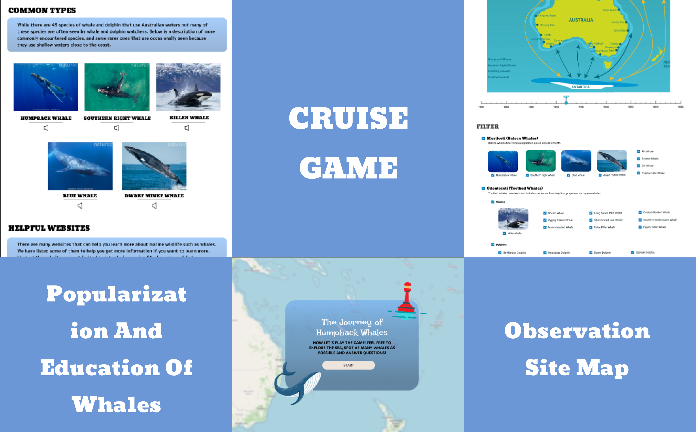

Feel free to reach out if you're interested in my projects. I'm also up for some interesting chit-chat!
Whales’ Tale is an interactive web platform designed to educate tourists and the curious about the various whale species found off the coast of Australia. By combining scientific data, fun games and interactive features, the site aims to deepen the understanding and appreciation of marine life, especially the majestic whales. This website contains three major elements: whale-related knowledge cited from authoritative websites, interactive observation site maps, and cruise games based on real data. Among them, the cruise game is the highlight of this website.
Whales’ Tale is designed for tourists and highly educated people who may not have extensive knowledge of whales but have a keen interest in learning more about these magnificent creatures. Whether people using this site are planning a visit to Australia or are simply interested in marine life, this platform provides the perfect combination of education and entertainment.
The concept of this website was inspired by a chance trip. I happened to know that it was whale watching season in Brisbane, so I went there happily. I was eager to take a lot of photos of whales, but I joined the group too early and didn't take the photos I wanted - obviously, whales also follow the habit of mammals who love to sleep in! I thought at the time: if there was an easy-to-understand website to teach me about whales, it would be great. I talked to tourists and classmates who were there at the same time, and turned out that I was not the only one who couldn't find a suitable website. So the idea of building this website was born.